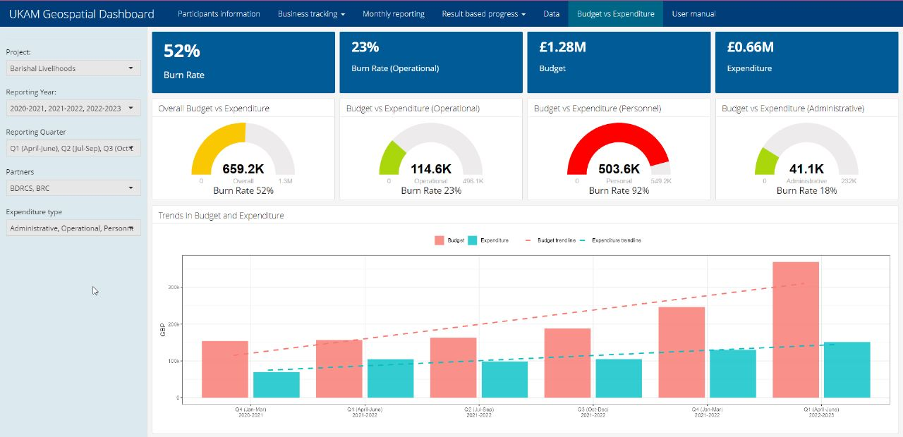

Five-plus years turning spatial and mobility data into decisions for public health and development programs across Bangladesh and the Greater Mekong — now extending that work into GeoAI-based image analysis and feature extraction for humanitarian and resource-constrained settings.
I build interactive dashboards, automate GIS workflows, and translate complex spatial and mobility data into decisions for public health and development projects. My work applies remote sensing, GIS, and spatial machine learning in humanitarian and resource-constrained settings — with a growing focus on GeoAI-based image analysis and feature extraction.
I hold an MS in Geography and Environment (Urban and Regional Planning and Development) and a BS in Geography and Environment, both from the University of Dhaka. My research interests center on GeoAI and spatial machine learning applied to public health, disaster risk, and urban infrastructure across the Global South.
Geoprocessing, settlement & infrastructure mapping, raster/vector processing, change detection, accessibility modeling, cartography, data QA.
Google Earth Engine, land-use/land-cover analysis, satellite-image preprocessing, terrain & environmental analysis, ML for remote sensing, GeoAI feature extraction.
Python for geospatial analysis, R programming, workflow automation, data cleaning & preprocessing, spatial visualization, analytical scripting.
Leaflet, R Shiny, Flexdashboard, Esri Dashboards, interactive geospatial dashboards, web-mapping applications.
ArcGIS Pro, QGIS, Google Earth Engine, ERDAS IMAGINE, Pix4D, AccessMod 5, KOBO Toolbox, Microsoft Office.

Mahboob, M., Saha, M., & Hossain, M.I. (2023). “Spatial assessment of the seasonal impact of brickfields on air pollution in Dhaka metropolitan area using ordination techniques.” Air Quality, Atmosphere & Health.
DOI: 10.1007/s11869-023-01345-wHossain, Md. I., Haq, K. Md. F., & Sium, S. M. (2025). “River process in active Ganges floodplain region using DSAS.” International Journal of Hydrology Science and Technology, 20(4), 468–490.
DOI: 10.1504/ijhst.2025.149765